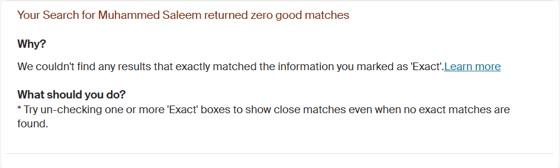

Crime - 2026-02-04: Muhammed Qasim Saleem Jailed
High Wycombe, UK
Crime Drug Offences Muhammed Qasim Saleem High Wycombe UK
Muhammed Qasim Saleem has been jailed. What's he been up to?
Source#Crime #Drug Offences #Muhammed Qasim Saleem #High Wycombe #UK
Thumbnail

People Involved
| Name | G | Nationality | Role | Age | Date of Birth | Offence(s) | Sentence |
|---|---|---|---|---|---|---|---|
| Muhammed Qasim Saleem | 🌐 | Unknown | Offender | 27.0 |
Possession with intent to supply class A drugs (heroin)
Possession of cannabis
|
4 years
4 years
|
Muhammed Qasim Saleem was jailed for four years after pleading guilty to possessing heroin and cannabis with intent to supply. Saleem was arrested in July 2025 at a vulnerable person’s address, where he was found with a large quantity of drugs. He was on licence at the time of the offence so clearly didn't learn the lesson the first time round. So what were his previous offences? 2018, he got 10 years for Grievous Bodily Harm along with Haroon Shouqat and Amjid Hussain. They had attacked someone in Slough with a hammer. The victim suffered a number of fractures to his jaw, the side of his face and to his left cheek arch, as well as a black eye. He spent eight days in hospital and underwent surgery for the insertion of metal plates in his jaw. He appealed his sentence and the appeal judges said that he posed a high likelihood of reconviction and a high risk of serious harm to known adults and the public. Too right. He lost the appeal. Before that hammer attack, he had other convictions. Drug dealing and affray.

Saleem is a migrant to the UK. So the obvious question, he's out from prison on licence, why wasn't he deported at the end of his previous sentence? If he had been deported for the affray, or for the first round of drug dealing the crime numbers would be down. A failure by the Home Office and political classes. Like, subscribe and share if you find this information useful.